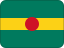

Saint Kitts and Nevis
Part of
Caribbean
 Saint Lucia
Saint LuciaShort facts
RegionCaribbean
LanguageEnglish
Time zoneAST (UTC-4)
Drives onLeft
Worth seeing
- Brimstone Hill Fortress: A UNESCO fortress built by slave labour to defend British sugar interests.
- Nevis Peak Hike: A cloud forest trail to the summit of a dormant volcanic cone.
- Pinney's Beach: A long palm-lined beach on the sheltered Caribbean side of Nevis.
Planning questions
What is Saint Kitts and Nevis known for?Brimstone Hill Fortress, Nevis Peak Hike, Pinney's Beach.
What is the capital?Basseterre.
Which language is useful?English.
When is the national day?19 September.
How should I browse it here?Start with the facts, jump to linked cities, then check events and topics.
Upcoming events
No future Saint Kitts and Nevis-linked events are active in the current dataset.
Food & drink
 Street food
Street food Pina colada
Pina coladaKnown for
Brimstone Hill FortressNevis Peak HikePinney's BeachBasseterreStreet foodPina colada
 Music & Culture
Music & Culture Caribbean coastlines
Caribbean coastlines